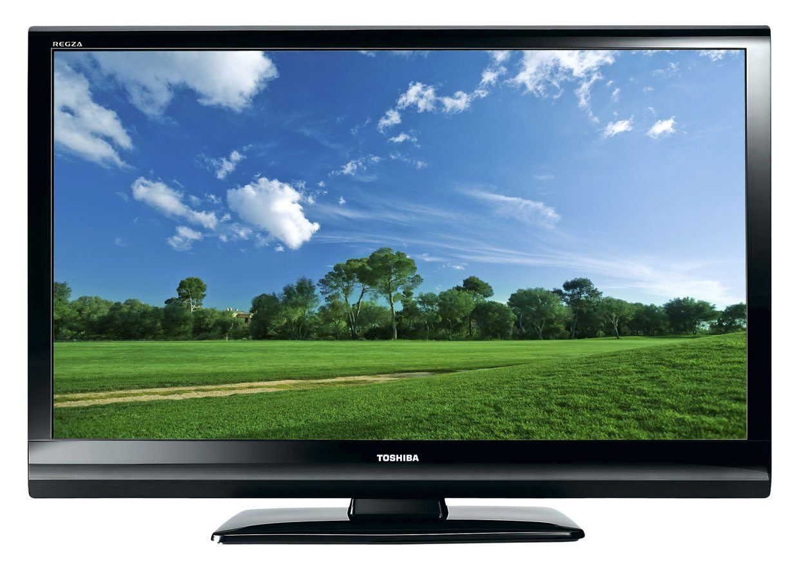

TV & broadcasting in South Africa
MyBroadband
Types of TVs
CRT
Plasma
LCD — Liquid Crystal Display
LED — Light Emitting Diode

Smart, 3D, and curved
Broadcast services
Similar to broadband in a few ways. In the end, it's just about trying to get data to people.
- Wireline — cable, fibre
- Wireless — terrestrial, satellite
The big difference?
- Broadband: one sender, one receiver (mostly)
- Broadcast: one sender, many receivers
Free vs. subscription TV
- Pay TV - monthly subscription
- Free TV
- Free-to-air — anyone can pick up the signal
- Free-to-view — you need a decoder, but no subscription
Pay TV
A broadcast TV service with a monthly subscription fee.
Free-to-air
Unencrypted TV and radio services.
Free-to-view
TV services without a subscription, but which are encrypted.
Satellite broadcasting
- Pay TV — DStv, StarSat
- Free-to-view — OpenView HD
- What does DStv stand for?
How DStv works
How does DStv get all its channels?
Terrestrial broadcasting
Digital migration
- Terrestrial TV uses old “analogue standard”.
- Migration: switch to better “digital” standard, and turn analogue off.
- However, currently TVs in SA can only receive the analogue signal — integrated/embedded tuners. Think of it like a built-in decoder. So now what?

Fight! Fight! Fight!
Digital migration battles
- 2010: Fight over standards.
- 2011: Sanity prevails under Roy Padayachi. We adopt a newer version of the standard we were going to use anyway.
- Since then: fight over “encryption” or “conditional access”, depending on who you speak to. Heading to ConCourt.
- Conditional access: how DStv can switch you off for not paying.
- E.tv wants CA - free-to-view.
- DStv, SABC, and gov’t don't want CA - free-to-air.
Fin.
Not in this session
- Resolution: 480i, 576i, 720i/p, 1080i/p, UHD
- Scan types: i and p
- TFT Panel types: *VA, PVA, TN, IPS
- Subpixel arrangements
- New pay-TV entrants, e.g. Siyaya and Kagiso/Kwese
- VOD and streaming